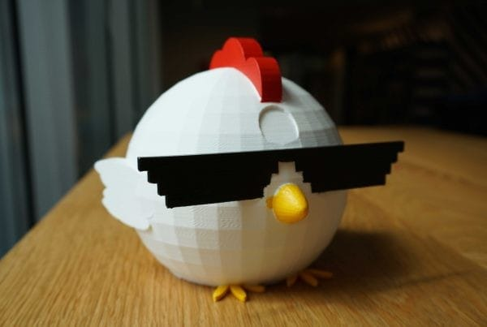

Studentenwerk

The game changer
The Game Changer houdt de game-uren van uw kind bij. Als de tijd verstreken is kan uw kind niet meer spelen. Hoe eerder je stopt met gamen, hoe meer bonusuren je krijgt.
Rupsie
Rupsie is een app voor kinderen van 5-6 jaar. Met Rupsie maken kinderen, in combinatie met AR,vrolijke deuntjes voor beestjes. Het combineert op slimme wijze de fysieke en digitale wereld.
HUB
Met HUB zal het vervoer van bedrijven in de binnenstad op een duurzame manier veranderen. Via een app kunnen werknemers slimme voertuigen - met digitaal slot - reserveren, beheren en classificeren.